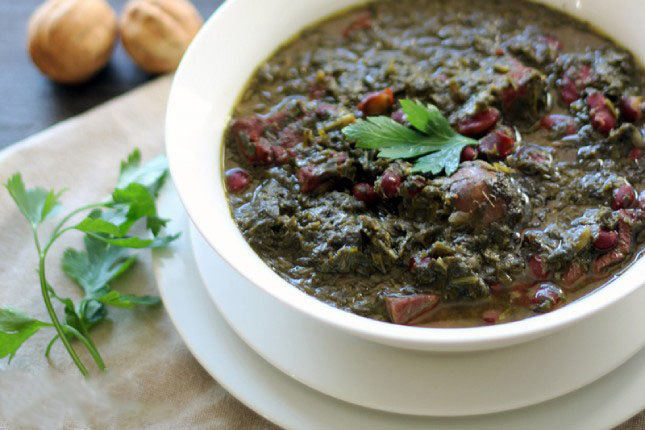
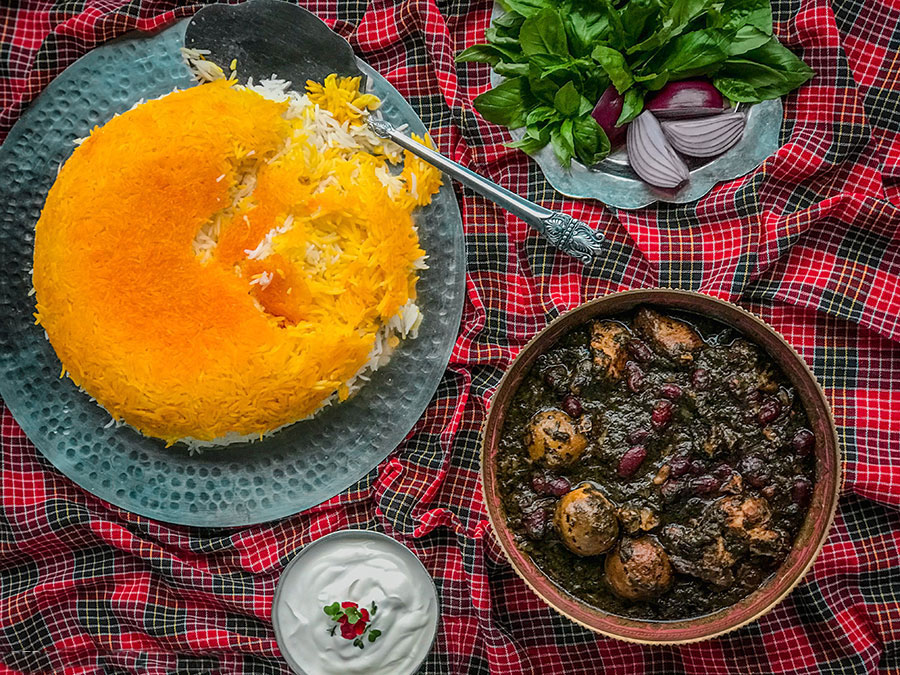
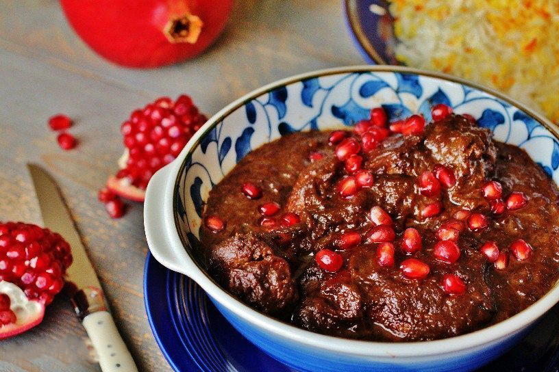
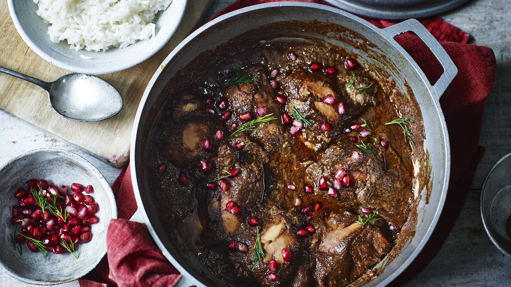
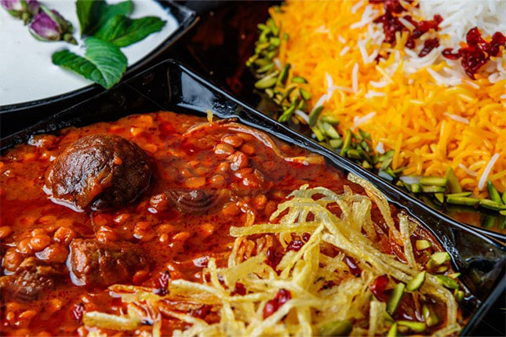
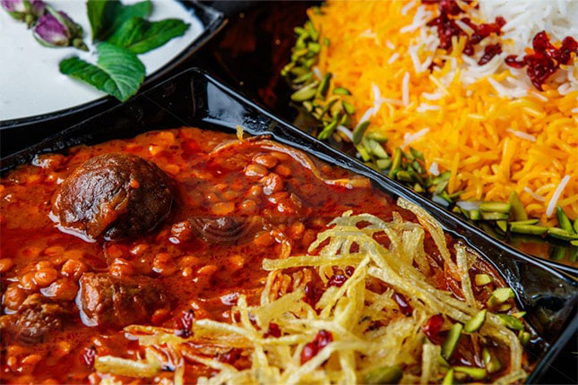

Ghorme Sabzi
Ingeredients
- Large yellow onion
- 1 teaspoon ground turmeric
- boneless chuck roast, cut into small cubes
- Finely chopped spinach
- Finely chopped green onions
- Finely chopped cilantro
- Finely chopped italian flat leaf parsley
- Finely chopped chives
- Finely chopped fenugreek leaves
- Water
- Salt and ground black pepper
- Dried lemon
- Red kidney beans


How to make it?
- Heat 2 tablespoons oil in a large pot over medium-high heat. Add onion; cook and stir until deep golden brown, 10 to 15 minutes. Stir in turmeric for 1 to 2 minutes. Add chuck cubes; cook until coated in turmeric and browned on all sides, 8 to 10 minutes.
- Heat remaining 2 tablespoons oil in a separate pot over medium heat. Add spinach, green onions, parsley, cilantro, chives, and fenugreek leaves; cook and stir until deep dark green in color, 5 to 10 minutes.
- Stir spinach mixture into the onion and chuck mixture. Pour in enough water to create a slurry consistency. Season with salt and pepper. Pour in lemon juice. Reduce heat, cover, and simmer stew until greens soften, about 1 hour.
- Pierce dried limes with a fork and add to the stew. Continue simmering until chuck is tender, 30 minutes to 1 hour. Stir in red kidney beans. Cook until flavors combine, about 30 minutes. Discard dried limes before serving.
More information about this food
Ghormeh sabzi dates back as far as 5,000 years and originated in Iran.
Ghormeh is derived from Turkic kavurmak into Persian and means "braised," while sabzi is the Persian word for herbs.
Fesenjan
Ingeredients
- 1 to 2 large yellow onions, chopped, (3 cups)
- 2 tablespoons unsalted butter
- 3 tablespoons extra virgin olive oil
- 5 tablespoons pomegranate molasses
- 8 ounces walnut halves (about 2 cups)
- 2 pounds boneless skinless chicken thighs and/or breasts, trimmed of excess fat, cut into medium size pieces, patted dry and salted
- 2 cups chicken stock
- 2 tablespoons plus 2 teaspoons of sugar
- 1/2 teaspoon turmeric
- 1/4 teaspoon cinnamon
- 1/4 teaspoon ground nutmeg
- 1/4 teaspoon ground black pepper
- Salt
- 1/2 cup fresh pomegranate arils for garnish, optional


How to make it?
- You can toast the walnuts in one of two ways. You can either spread them out in a single layer in a large skillet, and toast them on medium high heat, stirring frequently until lightly toasted, OR you can spread them out in a single layer in a baking rimmed baking sheet, and toast at 350°F in the oven for 8 to 10 minutes. In either case, once toasted, remove from heat and allow to cool. Once cool enough to handle, pulse in a food processor or blender until finely ground.
- In a large pan, heat 1 tablespoon of butter and 2 tablespoon of olive oil over medium-high heat. When the butter has melted, pat the chicken pieces dry again and place the chicken pieces in the pan, working in batches if necessary to not crowd the pan, and cook until golden brown on all sides. Sprinkle the chicken with salt while they are cooking.
- Use a slotted spoon or tongs to remove the chicken from the pan, set aside. Add a tablespoon of butter and a tablespoon of oil to the pan. Lower the heat to medium low. Add chopped onions to the pan and sauté until translucent, stirring on occasion to release the browned bits from the bottom of the pan.
- Return the chicken pieces to the pan with the onions. Pour 2 cups of chicken stock over the chicken and onions. Bring to a boil, reduce to a simmer, cover and simmer gently for 30 minutes.
- Stir in the ground walnuts, pomegranate molasses, sugar, and spices. Cover and cook on very low heat for 1 hour, stirring every 20 minutes or so to prevent the walnuts from sticking to the bottom of the pan. Remove from heat and adjust sugar/salt to taste. At this point the chicken should be fall apart tender.
- Garnish with pomegranate seeds. Serve over parsi pulao or other favorite rice.
More information about this food
Fesenjan is believed to have originated in Gilan province, a temperate green swath of land along the Caspian Sea in the north of Iran, where wild ducks are plentiful. Gilanis have a taste for tart, fruity flavors like those in this dish, which has been around in one form or another since the days of the Persian Empire
Food sugestion
Similar dish in terms of ingeredients
Anar Bij Fandogh Ghatogh (Please translate the website)Gheimeh
Ingeredients
- 1/2 cup yellow split peas(Rinsed)
- 1 1/2 cups water (To cook the peas)
- 1 large onion
- 6 tablespoons olive oil or ghee
- 1 teaspoon turmeric
- 1 pound stew beef,
- 4 tablespoons tomato paste
- 1 1/2 cup water
- 3 Limoo Omani (Persian dried limes)
- 1 1/2 teaspoons salt
- 1/2 teaspoon black pepper
- 1/2 teaspoon Advieh, Persian spice mix
- 1/2 teaspoon sugar
- 1/4 teaspoon ground saffron
- 2 large yukon gold potatoes
- 4 tablespoons olive oil
- 1/2 teaspoon salt
- 1/2 teaspoon turmeric
 

How to make it?
Yellow split peas
- In a small pot bring the yellow split peas and water to a gentle boil. Keep an eye on the pot as yellow split peas produce lots of foam and can spill over.
- Once boiling, partially cover and simmer on low heat for about 15 minutes. The yellow split peas are partially cooked at this stage and will continue to cook further once integrated into the stew. Remove from the heat, strain and set aside.
Stew
- Saute the onions with oil in a large pot over medium heat for 15 minutes
- Add turmeric and saute for an additional 2 minutes. The onions should be golden in color and aromatic at this stage.
- Add the beef pieces to the onions and increase the flame to medium-high and saute for about 5 minutes.
- Continue by adding the tomato paste and saute for a couple of minutes on medium heat to bring out the flavor of the tomato paste.
- Add 1 1/2 cups of hot water, cover and cook for 45 minutes over low heat.
- Continue by adding the Limoo Omani, salt, pepper, Advieh, sugar to the stew. Stir and simmer for 20 minutes.
- Gently stir in the partially cooked yellow split peas, and continue to simmer on low heat for 15 minutes.
Potatoes
- While the meat is cooking, toss the potatoes with oil, salt, and turmeric and place single-layered on a baking sheet.
- Place the potatoes in a 375°F oven and roast for about 30 minutes, or until golden and crispy. I prefer to use a convection oven to roast the potatoes to a golden perfection without having to flip the potatoes over. If not using convection, be sure to flip the potatoes once.
Stew – continued
- Check the stew to ensure the meat is fully cooked and tender while the majority of the yellow split peas are still holding their shape.
- Add the saffron-rosewater and gently mix.
- The stew should be slightly tart and dense with ingredients, but not too dry or runny with liquid. Adjust as needed.
- Take the stew off the heat, and allow to set for 10 minutes.
Assembly
- Place the stew in a serving bowl and top with the crispy golden potatoes and serve with Persian saffron basmati rice.
More information about this food
The Persian word gheimeh (also transliterated as qeimeh) derives from Classical Persian qeema which comes from a Turkic word qıyma 'minced meat', like the Urdu qīmā/keema, Turkish kıyma and Greek kimás.